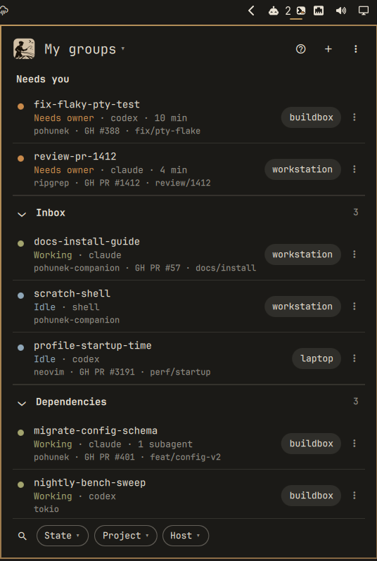
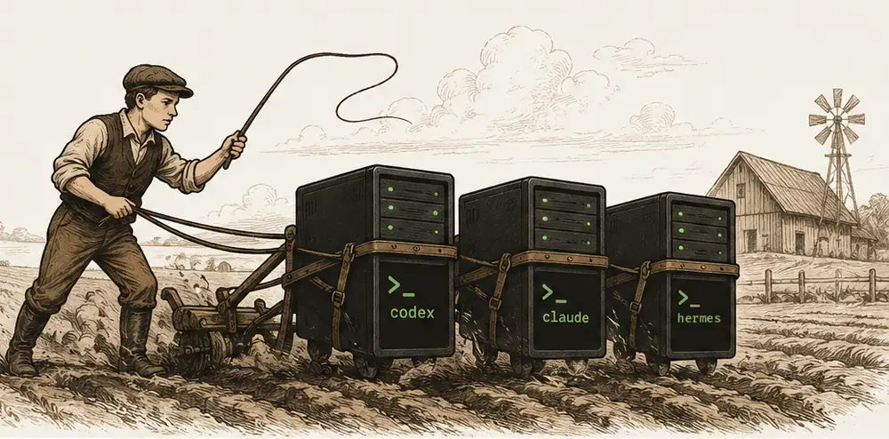

§ pohunek for Omarchy
Sessions that need you sit on top, from every host. One click attaches a real terminal; the agent keeps working when you detach.

amber needs you · green working · Claude Code, Codex, Hermes, Pi · omarchy.pohunek.dev